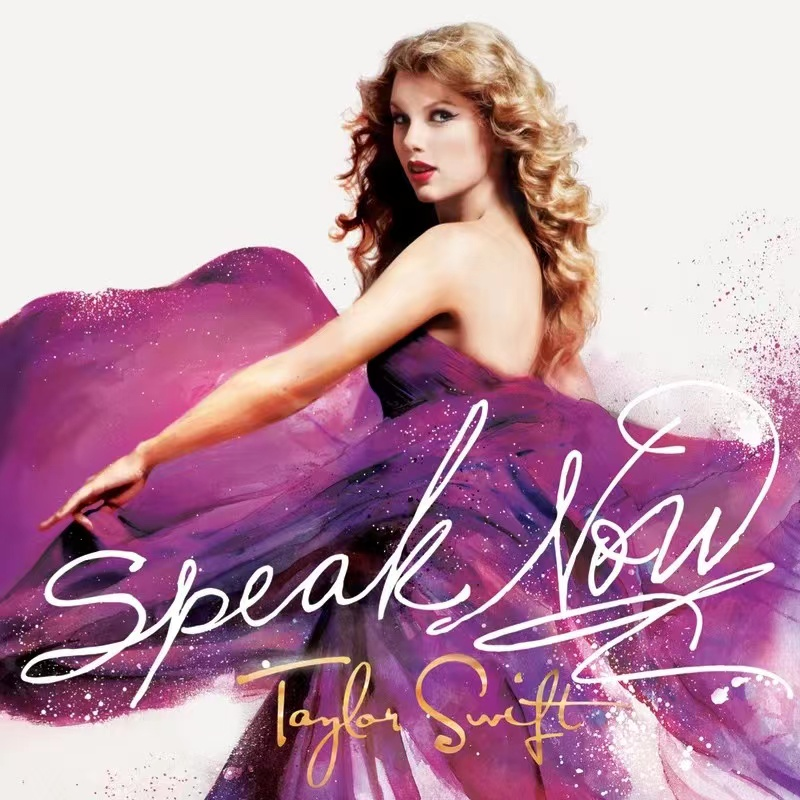

Lyric
作词 : Taylor Swift
作曲 : Taylor Swift
You, with your words
你，用你的话
like knives and swords and weapons
像刀剑和武器
that you use against me
刺向了我
You, have knocked me off my feet again,
你又一次击得我晕头转向
got me feeling like a nothing
让我感觉自己一无是处
You, with your voice like nails on a chalk board
你 用你那指甲划过黑板一样的声音
calling me out when I'm wounded.
在我受伤时叫住我
You, picking on the weaker man.
你只是欺凌弱者
You can take me down, with just one single blow
只要一拳 你就可以撂到我
But you don't know, what you don't know
可是你不知道
Some day, I'll be living in a big old city
有一天，我一定会住进古老的大城市
And all you're ever gonna be is mean
而你一辈子只会是个刻薄的人
Some day, I'll be big enough so you can't hit me
有一天，我会足够强大你再也不能打败我
And all you're ever gonna be is mean, why you gotta be so mean?
而你一辈子只会使坏而已 为什么要这么刻薄呢？
You, with your switching sides
and your wildfire lies and your humiliation
你 两面三刀 满嘴谎话 心怀屈辱 恶以报人
You, have pointed out my flaws again
你又在挑我的毛病
as if I don't already see them
好像我没发现似的
I walk with my head down tryna block you out,
我低着头走路，想把你挡在我的视线外
cause I'll never impress you
反正我从来没打动过你
I just wanna feel okay again
我只是想重新站起来
I bet you got pushed around, somebody made you cold
我赌你之前肯定受人排挤 使你变得冷血
But the cycle ends right now, cause you can't lead me down that road
但恶性循环到此为止，我才不会重蹈覆辙
And you don't know, what you don't know
你不知道
Some day, I'll be living in a big old city
有一天，我一定会住进大城市
And all you're ever gonna be is mean
而你一辈子只会当个刻薄者
Some day, I'll be big enough so you can't hit me
有一天，我会足够强大你再也不能打败我
And all you're ever gonna be is mean, why you gotta be so mean?
而你一辈子只会使坏而已 为什么要这么刻薄呢？
And I can see you years from now in a bar talking over a football game
我已经预见多年后 你在酒吧里对一场足球夸夸其谈
With that same big, loud opinion but nobody's listening
说着你那老套的大话 但根本没人在听
Washed up and ranting about the same old bitter things
过着失败的人生 一遍又一遍地倾诉你的苦楚
Drunk and rumbling on about how I can't sing, but all you are is mean
喝多了又开始喋喋不休 抱怨我有多么不会唱歌
All you are is mean, and a liar, and pathetic, and alone in life,
你一辈子就会尖酸刻薄 谎话连篇 孤单又悲哀
And mean, and mean, and mean, and mean
无端无尽的刻薄
But some day, I'll be living in a big old city
但有一天 我一定会住大城市
And all you're ever gonna be is mean. Yeah
而你一辈子只能当一个刻薄者
Some day, I'll be big enough so you can't hit me
有一天，我会足够强大到你再也不能打败我
And all you're ever gonna be is mean, why you gotta be so mean?
而你一辈子只会使坏而已 为什么要这么刻薄呢？
Some day, I'll be living in a big old city
有一天，我一定会住进大城市
And all you're ever gonna be is mean
而你一辈子不过是个跳梁小丑
Some day, I'll be big enough so you can't hit me
有一天，我会足够强大你再也不能打败我
And all you're ever gonna be is mean, why you gotta be so mean?
而你一辈子只会使坏而已 为什么要这么刻薄呢？
Mean
Singer: Taylor Swift publish time: 2011-03-14
language：English album：Mean